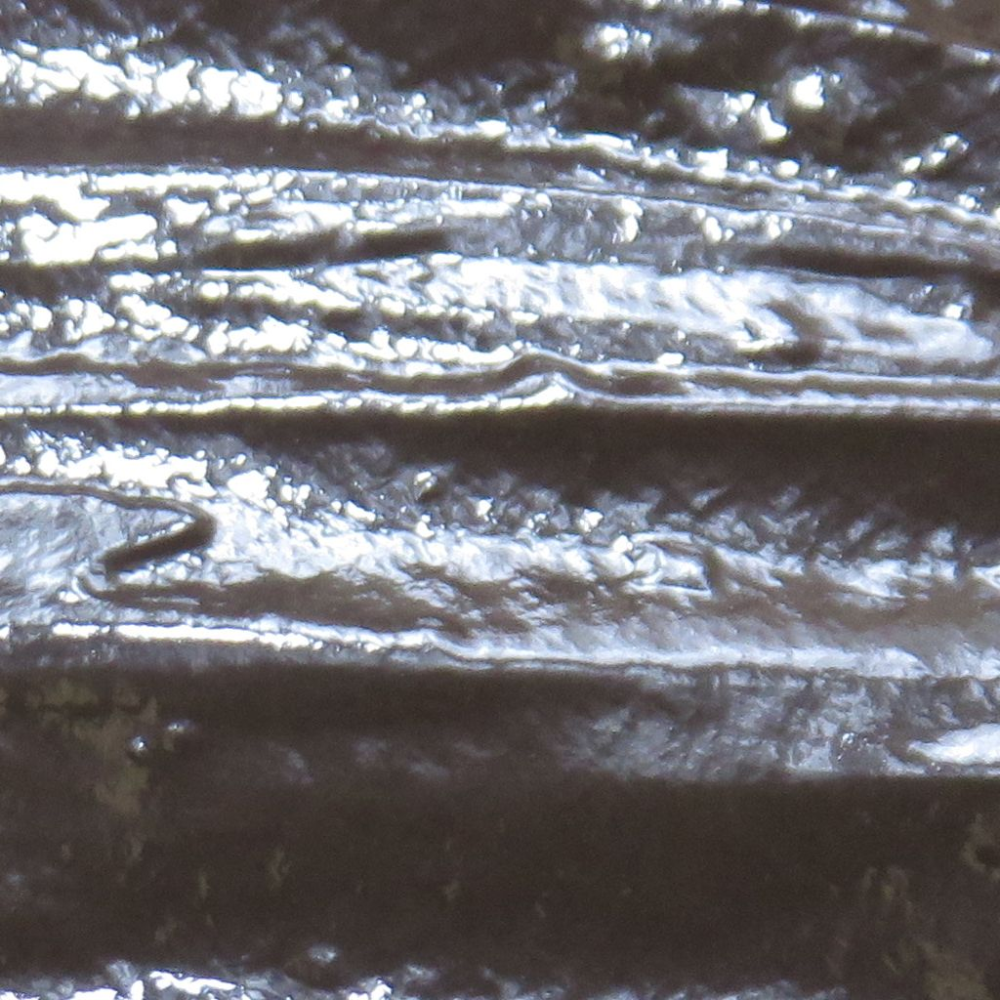
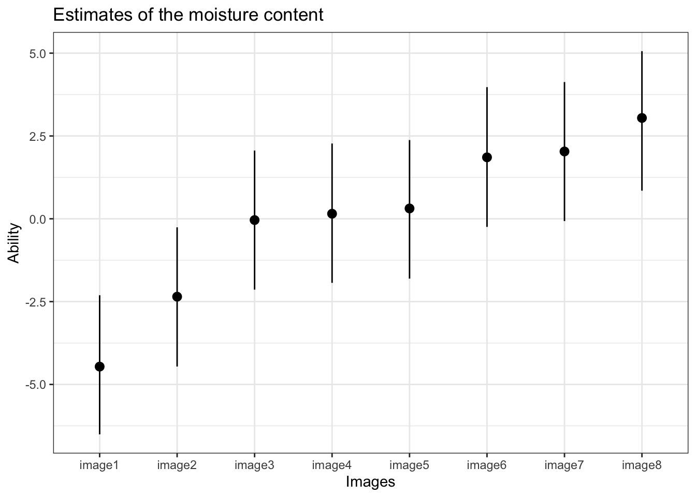

Chapter 3 Re-analysis 1
This reanalysis is based on the paper:
Iwasa, Kazunori, et al. “Visual perception of moisture is a pathogen detection mechanism of the behavioral immune system.” Frontiers in Psychology 11 (2020): 170.
The data of this paper can be obtained from the repository: https://osf.io/5quj9/
library(bpcs)
library(tidyverse)
options(mc.cores = parallel::detectCores())
rstan::rstan_options(auto_write = TRUE)
set.seed(99)3.1 Importing the data
First let’s read the data:
Below we show a sample of how the original data looks like:
sample_n(d, size = 5) %>%
kable(caption = 'Sample of the original data') %>%
kableExtra::scroll_box(width = "100%")| player1 | player2 | win1 | win2 |
|---|---|---|---|
| image7 | image6 | 131 | 109 |
| image5 | image6 | 18 | 222 |
| image7 | image2 | 226 | 14 |
| image4 | image1 | 239 | 1 |
| image5 | image8 | 20 | 220 |
The data is in the aggregated format. So let’s expand it to the long format
d_moisture <- expand_aggregated_data(d, player0 = 'player1', player1='player2', wins0 = 'win1', wins1='win2')Now the data looks like this:
sample_n(d_moisture, size = 20) %>%
kable(caption = 'The data in the long format') %>%
kableExtra::scroll_box(width = "100%")| player0 | player1 | y | rowid |
|---|---|---|---|
| image2 | image7 | 1 | 2922 |
| image5 | image2 | 0 | 7102 |
| image7 | image6 | 1 | 11490 |
| image2 | image8 | 1 | 3200 |
| image1 | image3 | 1 | 358 |
| image8 | image4 | 1 | 12704 |
| image6 | image3 | 0 | 8973 |
| image8 | image3 | 0 | 12308 |
| image6 | image4 | 0 | 9188 |
| image5 | image2 | 0 | 7071 |
| image5 | image1 | 0 | 6724 |
| image4 | image7 | 1 | 6409 |
| image8 | image1 | 0 | 11986 |
| image4 | image1 | 0 | 5278 |
| image3 | image7 | 1 | 4694 |
| image4 | image5 | 1 | 5972 |
| image1 | image8 | 1 | 1533 |
| image4 | image8 | 1 | 6560 |
| image1 | image3 | 1 | 398 |
| image3 | image5 | 1 | 4228 |
3.2 Analysis with the Bradley-Terry model and the order effect model
Although this is multiple judgment case, the dataset in the aggregated format does not provide information of how each individual voted, therefore we cannot compensate this effect. Therefore, we will create an analysis with only the Bradley-Terry model and the Bradley-Terry model with order effect
First, let’s sample the Bradley-Terry model
m_moisture <-
bpc(
d_moisture,
player0 = 'player0',
player1 = 'player1',
result_column = 'y',
model_type = 'bt',
iter = 3000
)
save_bpc_model(m_moisture,'m_moisture','fittedmodels')Low let’s sample the model with order effect.
Although the authors said that the order of the images was inverted to compensate order effect, we can still estimate if there is an order effect or not in the choice.
But first we need to create a column indicating if there was order effect for that case or not. In this problem, we just indicate with a column of ones that all instances could have an order effect. Not that the package marks the order effect relative to player1. So if the values should be interpret as such.
3.3 Diagnostics
Checking convergence of the models
3.3.1 Tables and plots
First, lets get a table for the parameters (to export it to Latex just utilize the format option)
get_parameters_table(m_moisture, format = 'html', caption = 'Parameters estimates for the simple Bradley-Terry model')| Parameter | Mean | HPD_lower | HPD_higher |
|---|---|---|---|
| lambda[image1] | -4.461 | -6.507 | -2.307 |
| lambda[image2] | -2.350 | -4.459 | -0.257 |
| lambda[image3] | -0.038 | -2.138 | 2.061 |
| lambda[image4] | 0.153 | -1.933 | 2.273 |
| lambda[image5] | 0.313 | -1.805 | 2.377 |
| lambda[image6] | 1.855 | -0.243 | 3.974 |
| lambda[image7] | 2.032 | -0.069 | 4.128 |
| lambda[image8] | 3.044 | 0.849 | 5.060 |
get_parameters_table(
m_moisture_order,
params = c('lambda', 'gm'),
format = 'html',
caption = 'Parameters estimates for the Bradley-Terry model with order effect'
)| Parameter | Mean | HPD_lower | HPD_higher |
|---|---|---|---|
| lambda[image1] | -4.524 | -6.526 | -2.428 |
| lambda[image2] | -2.410 | -4.338 | -0.281 |
| lambda[image3] | -0.097 | -2.029 | 2.020 |
| lambda[image4] | 0.095 | -1.834 | 2.226 |
| lambda[image5] | 0.254 | -1.679 | 2.377 |
| lambda[image6] | 1.799 | -0.107 | 3.955 |
| lambda[image7] | 1.974 | 0.017 | 4.083 |
| lambda[image8] | 2.988 | 1.026 | 5.100 |
| gm | 0.001 | -0.054 | 0.057 |
We can see from the table of the order effect that the gamma parameter is very close to zero, indicating that there is no order effect
Now lets compute the posterior ranks of the images based on the first BT model
Generating a table with the images
r %>%
mutate(Image = c("data/moisture/Stimuli/image08.jpg",
"data/moisture/Stimuli/image07.jpg",
"data/moisture/Stimuli/image06.jpg",
"data/moisture/Stimuli/image05.jpg",
"data/moisture/Stimuli/image04.jpg",
"data/moisture/Stimuli/image03.jpg",
"data/moisture/Stimuli/image02.jpg",
"data/moisture/Stimuli/image01.jpg") %>% pander::pandoc.image.return()) %>%
knitr::kable(caption = "Rank of the images based on moisture content", format='html', booktabs=T)| Parameter | MedianRank | MeanRank | StdRank | Image |
|---|---|---|---|---|
| lambda[image8] | 1 | 1.000 | 0.0000000 | |
| lambda[image7] | 2 | 2.003 | 0.0547174 |  |
| lambda[image6] | 3 | 2.997 | 0.0547174 |

|
| lambda[image5] | 4 | 4.008 | 0.0891288 | |
| lambda[image4] | 5 | 4.993 | 0.0946571 | |
| lambda[image3] | 6 | 5.999 | 0.0316228 | |
| lambda[image2] | 7 | 7.000 | 0.0000000 | |
| lambda[image1] | 8 | 8.000 | 0.0000000 |
Now lets get a caterpillar style plot
get_parameters_plot(
m_moisture,
HPDI = T,
title = 'Estimates of the moisture content',
xaxis = 'Images',
yaxis = 'Ability',
rotate_x_labels = F,
APA = F
) + scale_x_discrete(
labels = c(
"image1",
"image2",
"image3",
"image4",
"image5",
"image6",
"image7",
"image8"
)
) + theme_bw()
3.3.2 WAIC
Calculating the WAIC of both models
##
## Computed from 8000 by 13440 log-likelihood matrix
##
## Estimate SE
## elpd_waic -4066.1 78.8
## p_waic 6.9 0.2
## waic 8132.2 157.6##
## Computed from 8000 by 13440 log-likelihood matrix
##
## Estimate SE
## elpd_waic -4067.1 78.9
## p_waic 7.8 0.2
## waic 8134.2 157.7We can see that the WAIC of the models are quite similar and that the model without the order effect has a slightly smaller WAIC and less parameters. Therefore we will select it.